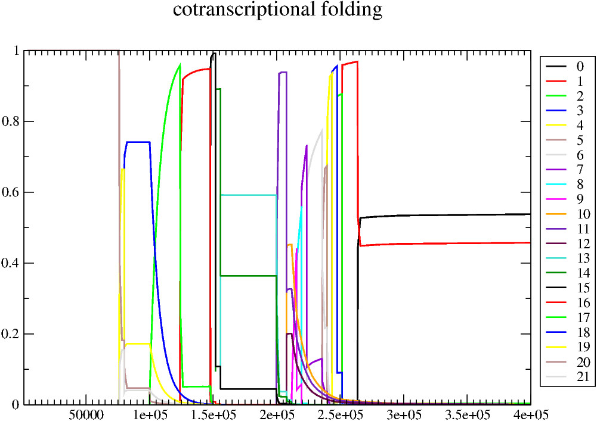
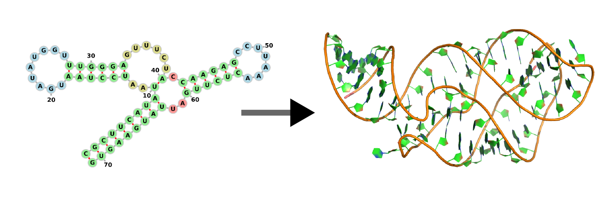
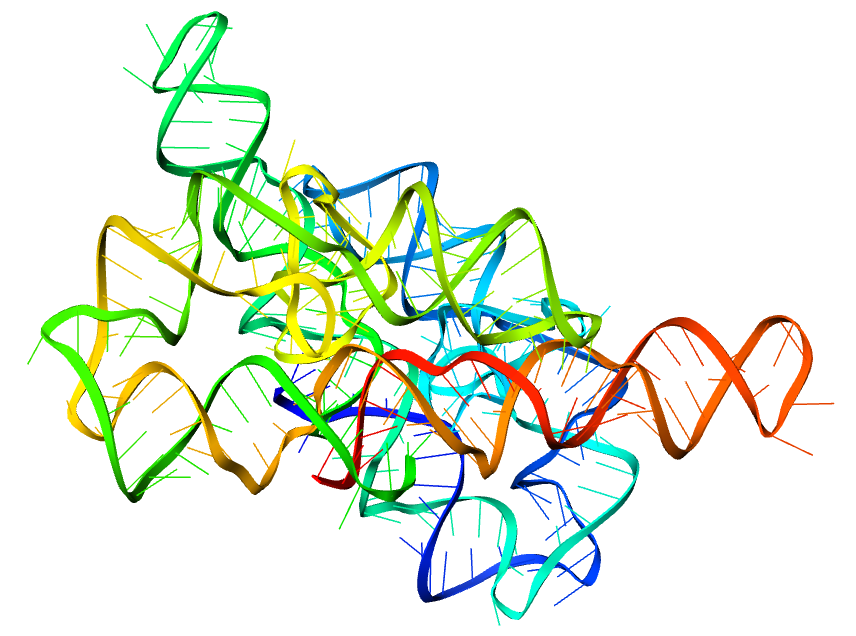
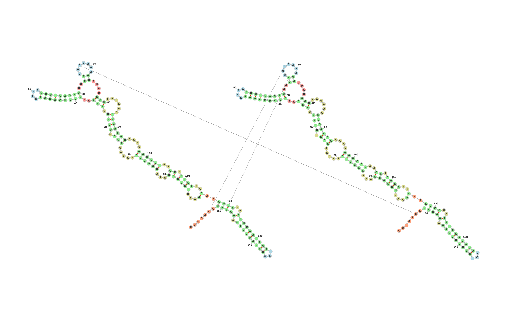
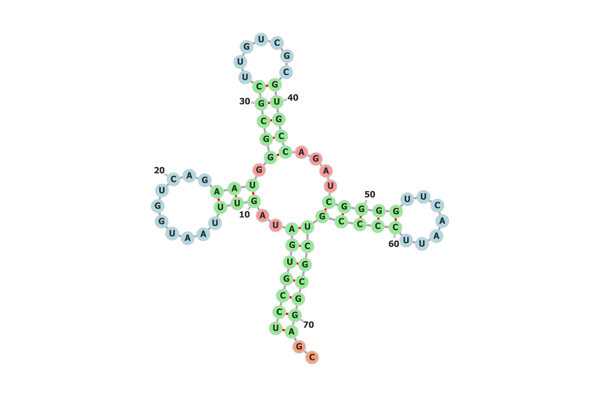
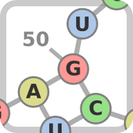
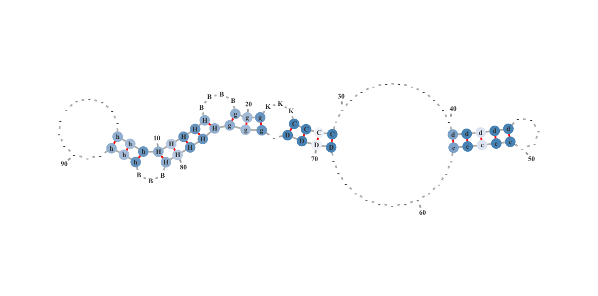

Peter Kerpedjiev / @pkerpedjiev
TBI
Co-transcriptional folding
RNA Secondary Structure Visualization
RNA tertiary structure prediction...
Simplifying known tertiary structures
Back to secondary structures
To convert 3D structures to 2D
To convert 1D structures to 2D
>2TRA_A
UCCGUGAUAGUUUAAUGGUCAGAAUGGGCGCUUGUCGCGUGCCAGAUCGGGGUUCAAUUCCCCGUCGCGGAGC
(((((((..(((..........))).(((((.......)))))....(((((.......))))))))))))..

To share structures online:
We called it forna
And you can use it freely at:
http://rna.tbi.univie.ac.at/~forna
....................
.((((((......)))).)).
(((((((......)))).))).
(((((((......)))).)))..
Why do we make secondary structure diagrams?
What do this sequence and secondary structure represent?
>2TRA_A
UCCGUGAUAGUUUAAUGGUCAGAAUGGGCGCUUGUCGCGUGCCAGAUCGGGGUUCAAUUCCCCGUCGCGGAGC
(((((((..(((..........))).(((((.......)))))....(((((.......))))))))))))..
Why do we make secondary structure diagrams?
To see patterns that are otherwise hard to perceive.
What does this represent?
Why do we make secondary structure diagrams?
To simplify information by removing extraneous or overwhelming detail.
What can we learn from this image?
Why do we make secondary structure diagrams?
To share information with others in a concise, directed manner.
forna is a super-simple tool for drawing secondary structures.
How should we make secondary structure diagrams?
Interactively - Changing a given structure should be easy, intuitive and flexible.